شکرلب
برای شیرینیسرایی محلی که میخواهد گرم و دوستداشتنی باشد، اما شبیه کارت تبریکهای تکراری نباشد. حرف «ش» و سه دانهی شکر، همهی داستان است.
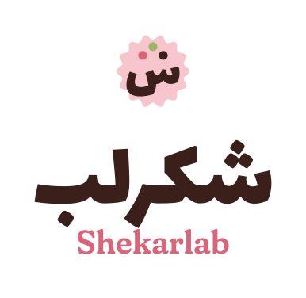
بریف و ایده
مسئله
شیرینیفروشیها یا بیش از حد سنتی و سنگیناند یا شبیه قالبهای آمادهی گل و پروانه. محلهای بودن باید حس شود، نه کلیشه.
ایده
«ش» با سه نقطهی سهرنگ مثل سه دانهی شکر و خردهی تزئینی. قاب نشان مثل لبهی دندانهدار کلوچه است.
نتیجه
نشانی گرد و چاپپذیر؛ مناسب مهر، برچسب دور جعبه، کیسهی کاغذی و آواتار اینستاگرام.
لوگو و نسخهها

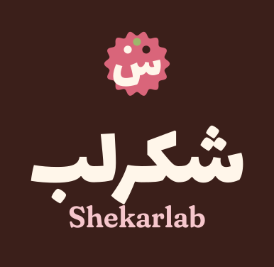

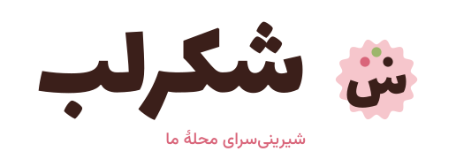

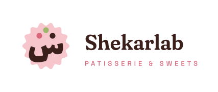

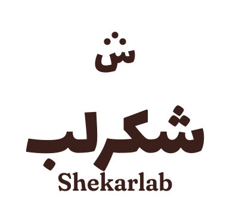

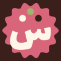

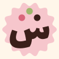


فضای خالی
دور لوگو دستکم به اندازهی ارتفاع نماد فضای خالی بگذار.
کوچکترین اندازه
نماد تا ۲۴ پیکسل و لوگوی کامل تا ۸۰ پیکسل عرض خوانا میماند.
چه نکنیم
لوگو را نکش، رنگهایش را عوض نکن و روی زمینهی شلوغ نگذار.
نشان: «ش» از حروف لالزار گرفته شده و نقطههایش جدا و رنگی شدهاند. نشان روی هر زمینهی روشن یا تیره جواب میدهد.
پالت رنگ
روی هر رنگ بزن تا کد هگز کپی شود.
تایپوگرافی
همهی فونتها آزاد و رایگاناند (مجوز OFL). نوشتهی لوگو برای حفظ شکل، به منحنی تبدیل شده است.
کاربرد روی مصنوعات
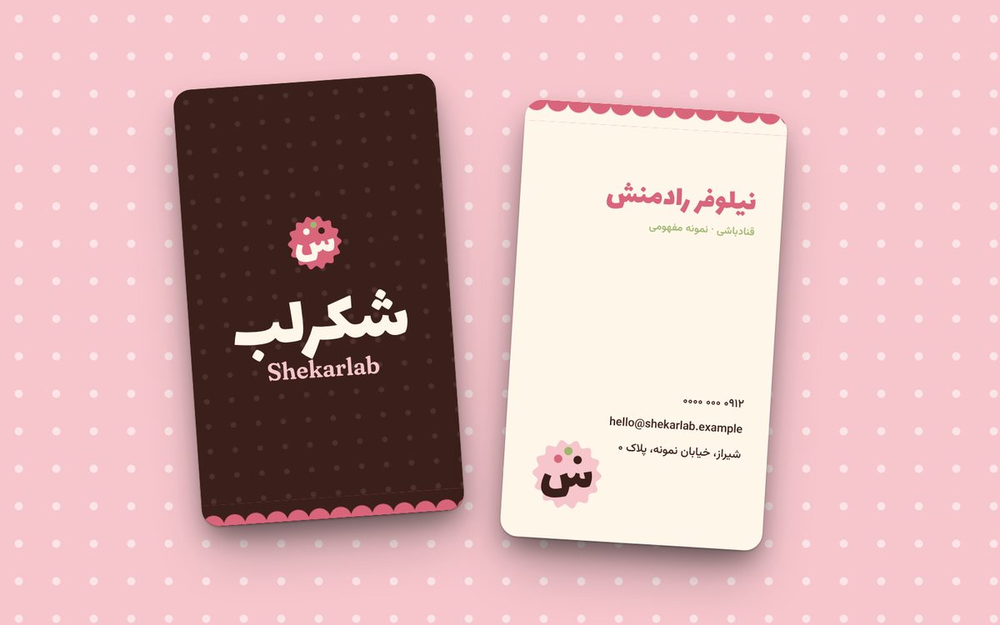
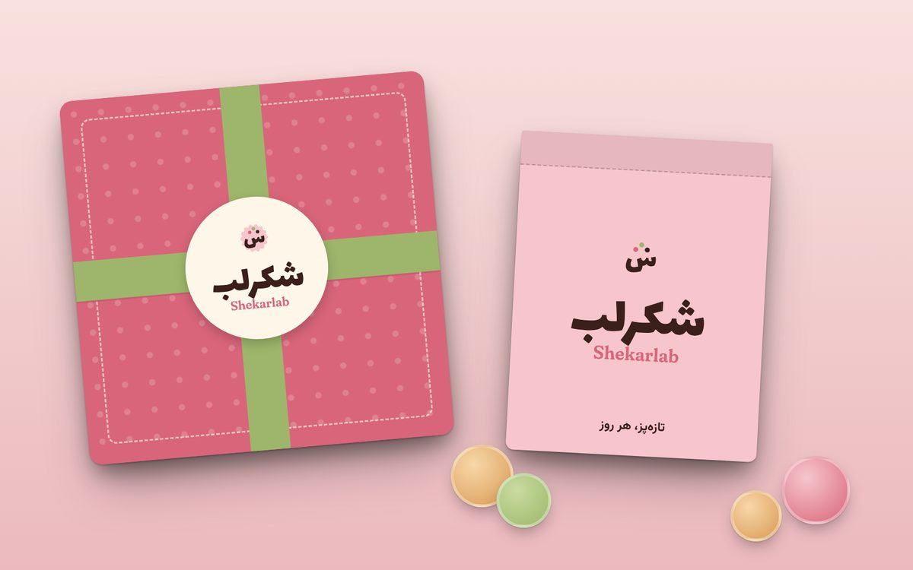
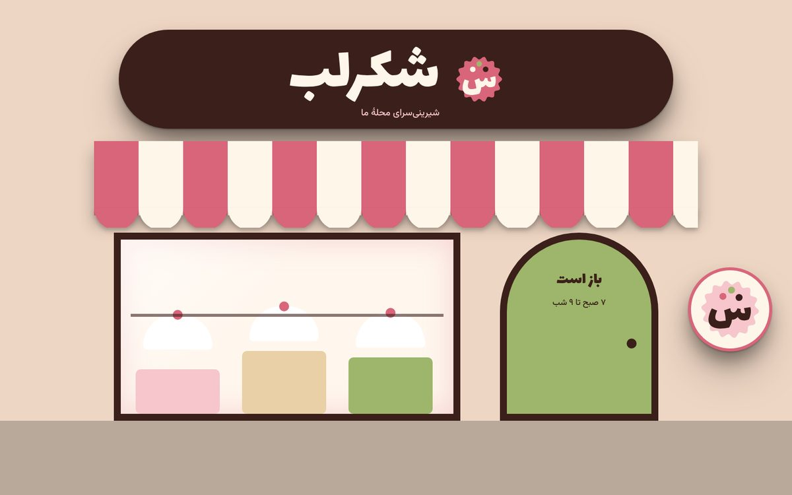
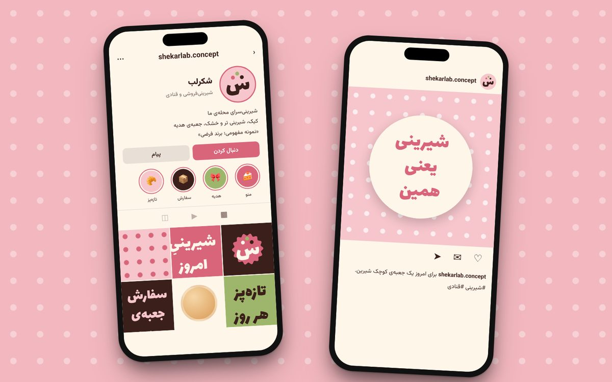
روند کار روی پروژهی واقعی
بریف
مخاطب، رقبا و حس مورد نظر را میپرسم.
کانسپت
چند مسیر ساده با توضیح نشان میدهم؛ تو یکی را انتخاب میکنی.
اجرا
لوگو، رنگ و فونت نهایی و کاربرد روی نمونهها.
تحویل
فایل برداری SVG، PNG و راهنمای کوتاه استفاده.
برای برند خودت هم همین دقت را میخواهی؟
بگو چه کاری میکنی و چه حسی میخواهی. زمان و هزینه بعد از بررسی نیاز اعلام میشود.